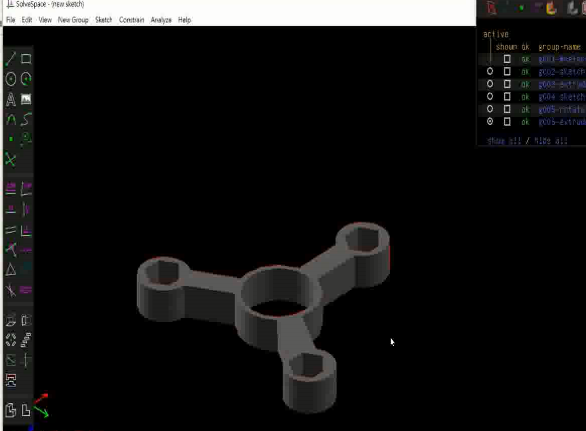

week <<
Previous Next >> week 6-9
week2-5
使用github建立倉儲和開啟近端
1. 至mde.tw 2019Fall電腦輔助設計實習下載2019fall可攜程式至隨身碟
2. 利用git config指令設定user name和email及proxy
3. git clone 建立個人github倉儲
4. 利用submodule指令設定cmsimde
5. 設定flask_cors
6. 利用cmsimde python wsgi.py 開啟近端網址
7. 錄製操作影片
https://youtu.be/8rPCwZ-RVuk
WEEK 3
編譯Slovespace
1. 將 Y:\portablegit\bin\sh.exe 改名為 sh_rename_for_solvespace.exe
2. 查驗 git 版本在 2.13 以上，即可使用 git clone --recurse-submodules 指令取得所有子模組資料
3. 將CMakeLists line 713 and 714 前面加上 #
4. 手動進行 libpng.dll.a 的編譯，並且改名為 libpng_static.a 後放到Y槽的 lib 目錄
5. 回到 solvespace 目錄， 建立 build 目錄後進入 build 目錄，執行以下兩行程式
cmake .. -G "MinGW Makefiles" -DCMAKE_BUILD_TYPE=Release
mingw32-make
6. 錄製操作影片
https://youtu.be/pi_DWE3nSlY
WEEK 4
跟上第 二 三 周進度
WEEK 5
Slovespace 操作
1. 進行分組作業，利用solvespace進行零組件繪製
2. 各組每人分別選擇要繪製之零組件
3. 利用solvespace進行繪製
4. 錄製操作影片
https://www.youtube.com/watch?v=IhD4QhuxYQI
完成圖

week <<
Previous Next >> week 6-9